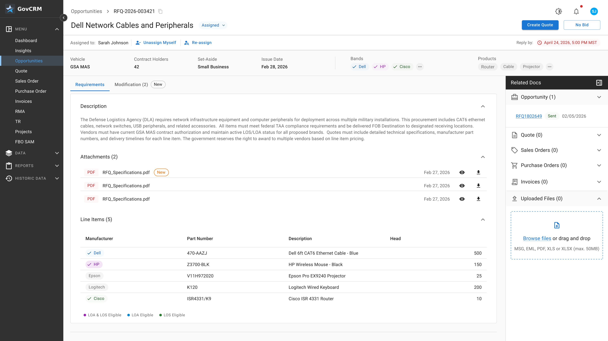

One Workspace
Connected business information.
One connected business platform
GovCRM brings customers, opportunities, documents, workflows, and decisions into one intelligent workspace.
[ The challenge ]
Customer details, documents, updates, and decisions spread across too many places make it harder for your team to stay aligned and move work forward.
Customer details, documents, and updates live across disconnected tools.
Manual coordination and handoffs slow the work that matters.
Important opportunities, decisions, and next steps are hard to see in one place.
[ The platform ]
A connected workspace for the people, information, and decisions that move your business forward.

Connected business information.
Contextual insight and workflow support.
Processes that adapt to how you work.
[ Core capabilities ]
Purpose-built tools that bring relationships, information, and work into one connected platform.
Keep customer context, opportunities, documents, and next steps connected.
Give your team one reliable place for the details behind every decision.
Organize requests, handoffs, follow-ups, and the work moving across your team.
Use intelligence in context to research, review, and act with more confidence.
[ GovCRM for government resellers ]
GovCRM brings the same connected business platform to the complex work of government reselling, with workflows for requirements, product research, vendor coordination, and quote preparation.
Built to support GWAC-related workflows, including organizing contract and task-order details, documentation, sourcing, pricing, and review.
Explore GovCRM for resellers →Bring requirements, documents, and customer context together.
Track sourcing conversations, requests, responses, and follow-ups.
Connect selected items and sourcing details to the quoting workflow.
[ Intelligent workflow ]
A continuous, visible workflow that keeps people, information, and next steps working together.
Bring the people, information, and requests behind the work together.
Turn scattered details into clear, connected business context.
Coordinate your team, handoffs, and follow-ups in one place.
Move the right work forward with insight and confidence.
[ Why GovCRM ]
GovCRM connects the work around your customer relationships so your team can see more, coordinate better, and keep moving.
Bring the relationships, information, and workflows your team relies on into one place.
AI assistance appears within the work itself, where it can support better decisions.
Flexible workflows support the way your business works today and the work ahead.
Intelligence for what’s next
See how GovCRM can bring your business operations into one connected workspace.